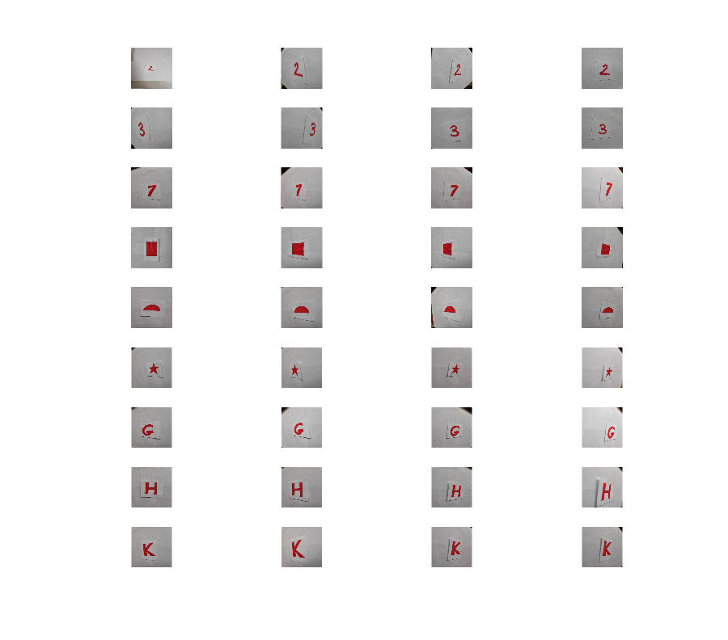
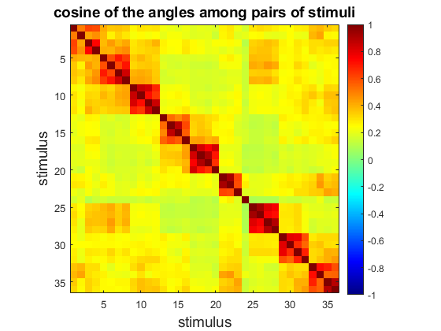

Script to study stimulus and selective response: feature extraction cnn
ver 0.1 05/08/2020
We test different layers of the CNN resnet50 to find the one that better seems to solve the problem of ignorance
thresh = 0.5 -> layer = activation_48_relu
Contents
Prepare enviroment
clear close all rng(3) path(path,'MatFunc/Vision') path(path,'MatFunc/Accuracy') path(path,'MatFunc/Simulate') path(path,'MatFunc/Misc')
Read training data
signa = 400; % radius signature steps (moments) Figures = {'Two','Three','Seven','Square','Semicircle','Star','LetterG','LetterH','LetterK'}; FLDR = 'Images/MomCV4'; PlotFLG = true; % Choose network CNN = resnet50; figure('color','w','position',[100 100 900 900]) [ReImgs,class] = ImportImagesEval(CNN,FLDR, Figures,PlotFLG);
Algorithm to choose best layer
% Choose range of layers to test rang = 23:49; % Set thresh of classification thresh = 0.5; % Classification of examples of same symbol CosSame = zeros(1,length(rang)); % Classification of different symbols CosDif = zeros(1,length(rang)); for i = 1:length(rang) layer = ['activation_' , num2str(rang(i)),'_relu']; feat = activations(CNN, ReImgs, layer, ... 'MiniBatchSize', 32, 'OutputAs', 'columns'); s = feat; [n,~] = size(s); s = sqrt(3/n)*(s - mean(s))./std(s); nrmS = sqrt(sum(s.^2)); % norma s S = s./nrmS; CosAngle = S'*S; % cos(angle) classes = unique(class); cossame = 0; cosdif = 0; for c = 1:length(classes) cossame = cossame + sum(sum(CosAngle(class==c,class == c) > thresh)); cosdif = cosdif + sum(sum(CosAngle(class==c,class ~= c)) < thresh); end CosSame(i) = cossame/length(classes); CosDif(i) = cosdif/length(classes); end
Inbalance to solve ignorance problem
a = 0.8; b = 0.2; [~,idx] = max(a*CosSame + b*CosDif); disp(rang(idx));
48
Plot cosine of stimulus for best layer found
layer = ['activation_', num2str(rang(idx)),'_relu']; feat = activations(CNN, ReImgs, layer, ... 'MiniBatchSize', 32, 'OutputAs', 'columns'); s = feat; [n,~] = size(s); s = sqrt(3/n)*(s - mean(s))./std(s); nrmS = sqrt(sum(s.^2)); % norma s S = s./nrmS; CosAngle = S'*S; % cos(angle) figure('color','w') imagesc(CosAngle,[-1 1]) axis square colorbar colormap('jet') xlabel('stimulus','FontSize',14) ylabel('stimulus','FontSize',14) title('cosine of the angles among pairs of stimuli','FontSize',14)